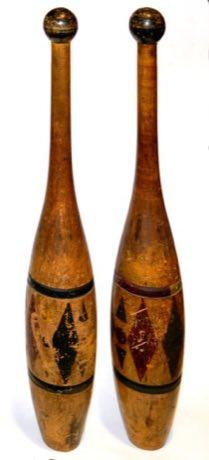
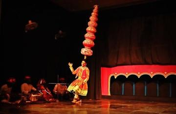

Bat-and-ball team game played at village and New Year festivals; exact rules not verified here.
Heritage note
Part of the living heritage of Sri Lanka.
Origins
Usually placed in the era of Modern Heritage (1800 to today), although its exact origins are uncertain, within the cultural world of South Asia.
Sources
Related entries

Kho-Kho
India +3 · Street and playground games
Hill-country tea plucking
Sri Lanka · Puzzles and mind gamesPillow fight
Sri Lanka +1 · Street and playground gamesBreak the pot
Sri Lanka · Dexterity and skill games
Indian club swinging
India +1 · Dexterity and skill games
Bhavai pot-balance dance
India · Dexterity and skill games